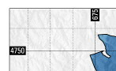
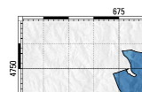
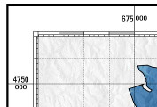
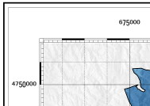

A file of mapping instructions that describes the various spatial and textual information to be printed must be prepared prior to running ps.out. Then, the better use is writing a script file as:
ps.out [flags] output=FILE << EOF (ps.out commands) EOF
The hash character ('#') may be used at the beginning of a line to indicate that the line is a comment. Blank lines will also be ignored.
The order of commands is generally unimportant but may affect how some layers are drawn. ps.out first draw the masked areas, lines, points, and labels, second the unmasked areas and lines, and finally the grids, unmasked points and unmasked labels. Raster maps are always drawn first, and only a raster map command may be used.
Be aware that some mapping instructions require the end command and some do not. Any instruction that allows subcommands will require it.
The resolution and extent of raster maps plotted with ps.out are controlled by the current region settings via the g.region module. The output filesize is largely a function of the region resolution, so special care should be taken if working with large raster datasets. For example if the desired output is Letter sized paper at 300dpi, with 1" margins and the raster filling the entire page, the usable area on the page will be 6.5" x 9", which at 300 dots/inch is equivalent to a region of 1950 columns x 2700 rows (see "g.region -p"). Any higher resolution settings will make the output file larger, but with a consumer printer you probably won't be able to resolve any better detail in the hardcopy.
The user can specify negative or greater than 100 percentage values for positioning several map decorations and embedded EPS-files, to move them outside the current map box region (for example to position a caption, barscale, or legend above or below the map box).
One "pixel" is 1/72 of an inch or 127/360 (aprox. 0.35) of a millimetre.
For users wanting to use special characters (such as accented characters) it is important to note that ps.out uses ISO-8859-1 encoding. This means that your instructions file will have to be encoded in this encoding. If you normally work in a different encoding environment (such as UTF-8), you have to transform your file to the ISO-8859-1 encoding, for example by using the iconv utility:
iconv -f UTF-8 -t ISO_8859-1 utf_file > iso_file
font
name [T]
size [#-]
color (color)
extend [#]
end
frame
where [#- #-]
ref [left|right|center upper|lower|center]
offset [# #]
border [#-]
color (color)
fcolor (color)
margin [#-]
end
line
width [#-]
color (color)
style [solid|dashed|dotted|dashdotted|#...]
cap [butt|round|extended_butt]
end
USAGE
paper [paper type]: default A4
height [#-]
width [#-]
left [#-]: default 0.5inch
right [#-]: default 0.5inch
bottom [#-]: default 1.0inch
top [#-]: default 1.0inch
landscape [y|N]: default N
draw (draw)
font (font): set the default font
end
EXAMPLE
paper A4
left 2cm
top 4cm
landscape y
font
name Univers
size 8
end
end
This example set the size of paper to landscape A4 and Univers 8 point as defualt font.
USAGE scale 1:[#]The scale is selected as a relative ratio, e.g. 1:25000. Use maparea to select a specific width of map.
EXAMPLE
scale 1:25000
This example would set the scale of the map to 1 unit = 25000 units.
USAGE
maparea
left [#-]
top [#-]
width [#-]
height [#-]
border [#-]
color [color]
fcolor [color]
end
EXAMPLE
maparea
left 2cm
top 3.5cm
border 1mm
color black
fcolor none
end
This example positions the upper left corner of the map 2.0 cm from the
left edge and 3.5 cm from the top edge of the map. And draw a black border
of 1 mm of width around the map area.
USAGE
grid
major [#] (line)
minor [#] (line)
cross [#]
font [font]
fcolor [color]
format ['in', 'out', '+out' or 'iho']
cutoff [#]
end
EXAMPLE
grid
format in
major 1000
width .1mm
color gray
style 12
end
minor 200
width .05mm
color gray
style 12
end
font
name Univers
size 7
color white
end
fcolor black
cutoff 3
end
|
 format: in |
 format: out |
 format: iho |
 format: can |
USAGE
geogrid
major [#] (line)
minor [#] (line)
font [font]
fcolor [color]
format ['in' or 'out' or '+out']
end
EXAMPLE
geogrid
format out
major 30'
width .3
color magenta
end
minor 5'
width .1
color magenta
style 1
end
font
name Univers
size 5
color black
extend 1.2
end
fcolor none
end
USAGE
scalebar [scalebar type]
length [#]
units [code T]
major [# #], divisions and label separation
minor [# #], divisions and label separation
frame [frame]
font [font]
height [#-]
fcolor [color]
end
Scalebar types: I F f S s
EXAMPLE
scalebar f
frame
where 50% 0%
offset 0 12
ref center upper
border 0.5mm
color black
fcolor gray
end
font
name Univers
size 8
color black
end
length 20
units km Kilometers
major 5 2
minor 2 2
height 2mm
end
USAGE
note [code T]
frame [frame]
font [font]
angle [#] in degrees
width [#-]
end
Note codes: :file (filename),
:maplim,
:dimen,
:scale (pre-text)
or simple text use '|' to break lines (max 1024 characters)
EXAMPLE
note :scale scale
frame
where 0% 0%
offset -12 -4
ref left lower
border 0
fcolor none
end
angle 90
font
name Univers
size 6
extend 1.25
color gray
end
end
USAGE
draw [free]
direct (T)
color (color)
fcolor (fill color)
linewidth line_width
linedash line_width
font name size [extend]
[l,r,c,x,v,]text east north label or -1 angle label
textc east north label
labels filename
moveto east north
lineto east north
endline
line east1 north1 east2 north2
rectangle east1 north1 east2 north2 [fillcolor]
circle east north radius
arc east1, noth1, diameter, east2, north2
border width
psfile scale east north filename
maplimits
north east north radius
compass east north radius
rute east north label
end
USAGE
raster [R|R R R], required: one raster, one group name (:name) or three raster (R G B)
grey [y|N]. Output in shades of grey.
maskcolor [color]. Color to be used for mask.
maskcell [R (R)]. Raster used as mask and optionally a raster for background.
outline [line]. Specifications of outline.
setcolor [CAT color]. Overrides the color of cat
end
EXAMPLE
raster geology
grey n
maskcolor none
maskcell geo_mask elev_state_500m
outline
width .01
color black
end
setcolor 28 200:123:200
end
USAGE
vareas [V]
lwidth [#-], default: 0 (area).
line (line)
fcolor (color | RGBCOL$alpha [IDCOL])
pat [TXT]. Pattern EPS file.
pscale [#]. Pattern scale.
pwidth [#]. Pattern line width.
island [Y|n]. Draw island as normal areas (fill as normal area then hide it).
layer [#], default: 1. Layer number used with cats/where option
cats [CAT]
where [SQL]
masked [y|N]. Masked or not by raster mask
label [TXT]. For description or title in vlegend
lpos [# #]. Position where vector is plotted in legend and block
setrule [ID.CAT[:ID] TXT]. Set a label for the CAT.
end
USAGE
vlines [V].
type [line|boundary], default: line
line (line)
rgbcol [T]. Column name with line color data
hline (line)
offset [#-]. hline offset, default: 0.
layer [#], default: 1. Layer number used with cats/where option
cats [CAT]
where [SQL]
masked [y|N]. Masked by raster mask
label [T]. For description in vlegend
lpos [# #]. Position where vector is plotted in legend and block
end
EXAMPLE
vlines railroads
type line
label Rail roads
line
width .4mm
color green
end
hline
width .1mm
color black
end
masked n
end
USAGE
vpoints [V].
type [point|centroid|line|boundary], default: point
symbol [T]. Symbol standard or EPS file.
line (line)
fcolor (color). Fillcolor
size [# | SIZECOL #]. Size or size column (and legend size).
scale [#- #-]. Scale and bias to rescale sizecol.
rotate [# | ROTATECOL]. Rotate or rotate column.
dist [#-]. Distance between symbol on the cline
offset [#-]. Vertical offset of the symbol
cline (line). Conection line of the symbols
layer [#], default: 1. Layer number used with cats/where option
cats [CAT]
where [SQL]
masked [y|N]. Masked by raster mask
label [T]. For description in vlegend
lpos [# #]. Position where vector is plotted in legend and block
setrule [SIZE.CAT[:ID] TXT]. Set a label for the CAT.
end
EXAMPLE
vpoints precip_30ynormals
type centroid
symbol basic/circle
fcolor red
line
width .2
color black
end
size 10 ANNUAL
scale .01
end
USAGE
vlabels [V].
labelcol [T]
font (font)
decimals [#]
circled [Y|n]
layer [#]
cats [CAT]
where [SQL]
masked [y|N]
label [T]
lpos [#]
end
EXAMPLE
vlabels railroads
labelcol cat
masked n
end
USAGE
rlegend
raster
title
frame
font
cols
swidth
height
tick
order
whiteframe
gradient
end
EXAMPLE
rlegend
title Land Class 1996
name Univers Bold
size 12
extend 0.85
color black
end
raster landclass96
cols 1 0
frame
where 100% 100%
ref right upper
offset 0 0
border 2
color black
fcolor white
margin 8
end
font
name Univers
size 9
color black
end
width 8mm
height 7cm
tick 3
whiteframe 1
end
USAGE
vlegend [T] Title of legend
frame
title_font
font
cols
swidth
dy
end
EXAMPLE
vlegend
title .Leyenda
name Univers-Bold
size 10
extend 1.1
end
frame
where 100% 100%
ref left upper
offset 10 0
border 1
end
font
name Univers
size 9
end
end
USAGE
vlabel [code T]
font [font]
labelcol [T]
decimals [#]
layer [#], default: 1. Layer number used with cats/where option
cats [CAT]
where [SQL]
masked [y|N]. Masked by raster mask
label [T]. For description in vlegend
lpos [#]. Position vector is plotted in legend
end
Last changed: $Date$